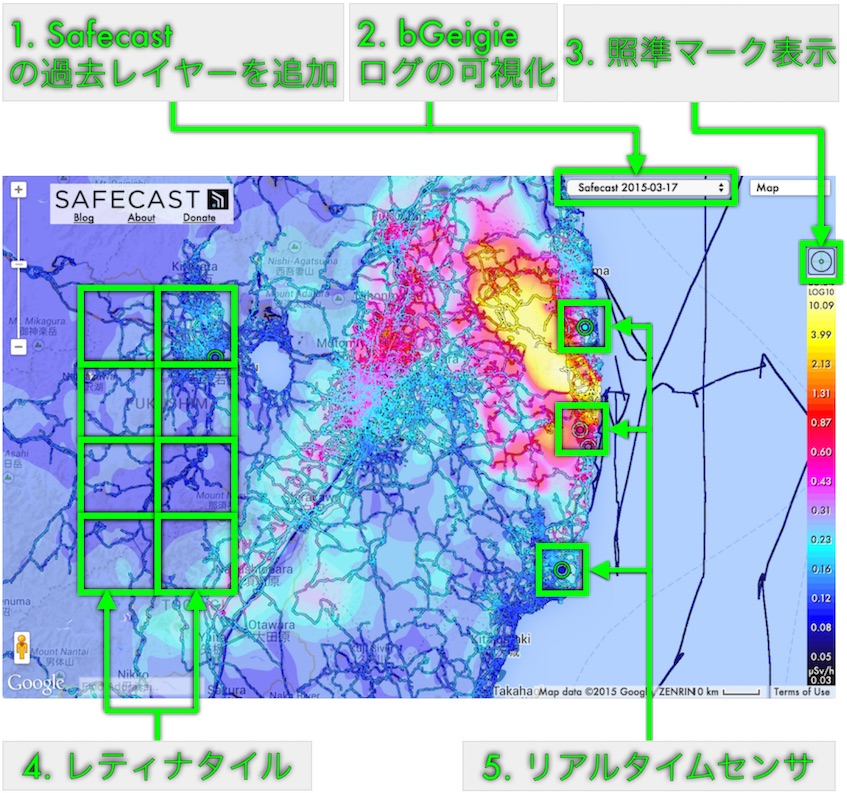

- Safecastの過去レイヤーを追加
- 2013年と2014年のスナップショット
- 時間における変化の可視化
- データ範囲の拡大の可視化
- bGeigieログの可視化
- 複数のログを同時に可視化可能
- ユーザー、テキスト、または日付で検索可能
- 拡張性とパフォーマンスのために、完全リファクタリングされたコード
- 現在登録されているログのすべてを同時に可視化可能（デスクトップ）
- 地図記号のカスタマイズ可能
- Googleストリートビュー対応
- 照準マーク表示
- 任意のレイヤーの数値を表示可能
- 凡例の値と目で比較する必要性を排除！
- カラールックアップの精度の指標
- 連続60 FPS表示
- レティナタイル
- HDPIまたはレティナディスプレイが必要です
- 「Safecast」と「Safecast Interpolation」レイヤーの高解像度のタイル
- ズームせずに、より詳細を表示
- リアルタイムセンサ
- 分かりやすいダイナミックアイコンにより、線量率とセンサー状態の表示
- アイコンの動的スケーリングにより、地図表示の邪魔をしない
- 改善されたグラフ、およびセンサー詳細情報へのリンク
このウィンドウは、一度だけ表示されます。
再表示するには：
- 「About」をクリックし、
- 一番下までスクロールし、
- 「What's New」をクリックしてください。